This chapter describes the basic features of BEAT together with a tutorial for those to gain familiarity with the system. As this chapter proceeds, important components of BEAT are introduced in numbered sections.
2.1 Starting BEAT
BEAT is initiated from clicking the application icon in the location where it is installed. Once initiated, BEAT will display a starting window.
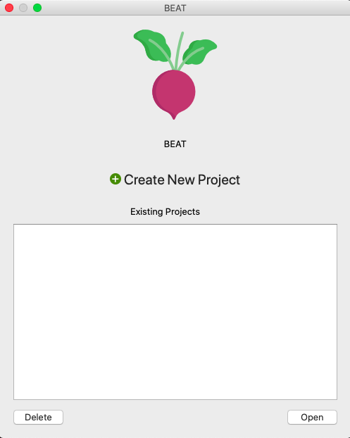
Figure 1. BEAT Start Window
After the initial display is shown, there will be two main buttons that will highlight blue as they are important for continuing through the system.
1. 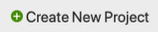 Create New Project. Select the Create New Project button to activate the view. This will allow the user to make a new project for the BEAT to work on. Select Cancel to exit the view.
2.1.1 Toggling Projects
If a project is created or there are projects already made, there are two options that are available to the user. Additionally, a detailed, popup view of projects is available.
1. Delete button. Select a Project, then select the Delete button to remove the project from BEAT. This will display a message for the user to confirm.
2. Open button. Select a Project, then select the Open button to open present projects on the machine using BEAT. These files will be checked if they are of compatible type.
3. Details button. Select the Details link to display the specifics of the project file the user chose. This will only display if the file is of right file type.
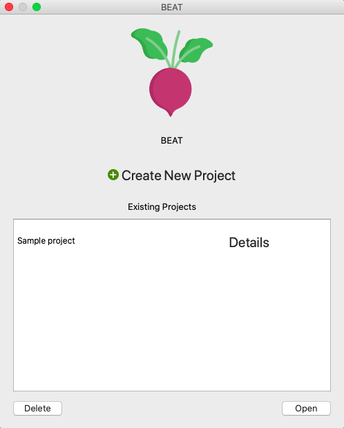
Figure 2. BEAT Start Window w/ Projects
2.2 Using BEAT
As with every application, BEAT starts off with a Main Display. This serves as the focal point of the tool as everything needed to complete analysis and other tasks will show and be available of ease to the user.
2.2.1 Initial View
Once the user selects a project to use for BEAT, the Main Layout will display. This will provide the user with access to all main functionalities and features of BEAT. Below shows what BEAT looks like before access to all features.
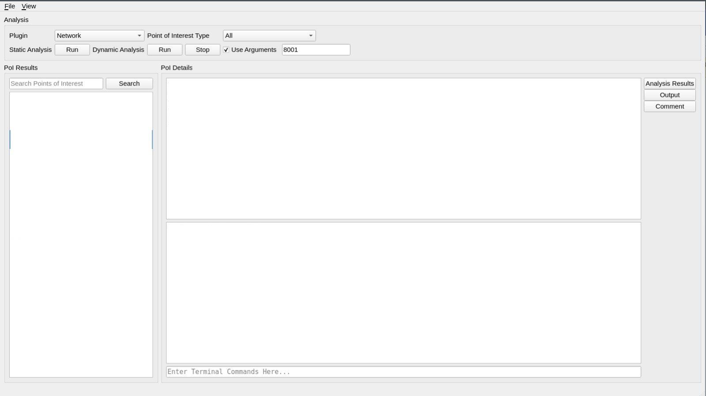
Figure 3. Main Layout Before Full Access
2.2.2 Fields and Functionalities
This section of the UM will demonstrate each field and function of BEAT and show the user how to navigate throughout the tool in order to accomplish each task. All tasks are at the sole discretion of the user.
2.2.2.1 Plugins
During use of BEAT, plugins or add-ons, are used as extensions for the tool in order to detect certain attributes of a binary file, called points of interest (POIs). These POIs are only to be detected if the user selects a valid plugin to aid during analysis. BEAT has the following features in regard to plugins, each having specific functionalities or back-end running features.
2.2.2.1.1 Manage Plugins
To manage and control which plugins to use, Select File on the top left-hand corner, and select Manage Plugins; keyboard shortcut is Ctrl+P. Once opened, the Manage Plugin window will display the control center.
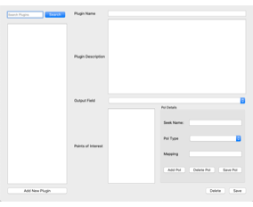
Figure 4. Manage Plugins Window
The control center breaks down the contents of a plugin, along with displaying the following functionalities for the user.
1. Add New Plugin button. Select Add New Plugin to add a new plugin from either your machine or an external source to use for analysis. BEAT will scan if it’s a valid plugin.
a. Upon adding a new plugin, follow the plugin XML format in the res folder of the BEAT repository. This is a valid plugin that all should follow. BEAT will validate whether each plugin matches the format.
2. Search Plugins search bar. Enter the name of a plugin saved in the tool.
3. Delete button. Select a Plugin, then select the Delete button to remove the plugin from BEAT. This will display a message for the user to confirm.
4.
 Save button. Select Save to save the plugin in its current
state.
Save button. Select Save to save the plugin in its current
state.
Once a plugin is added and selected, the control center will populate the various input fields. The Plugin Name field stores and displays the name the user wishes to name the plugin. The Plugin Description stores and displays a small description of what the plugin may store, its authors, or any other basic information. Both these fields can be edited at any time and do not halt any process of BEAT. An example is shown below.
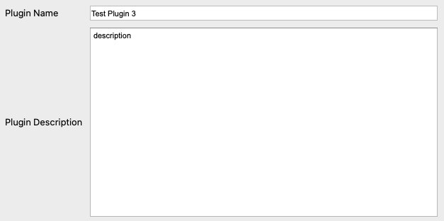
Figure 5. Plugin Name and Description fields
2.2.2.1.1.2 Points of Interest
Every plugin saved will detect specific POIs. These are exclusive and attributable to the plugin. POIs will be searched by back-end processes and will display in the fields below.
Figure 6 is the list of POIs found pertaining to the plugin. To view the specific details, select a POI.
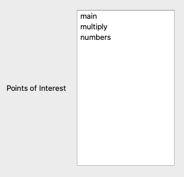
Figure 6. List of Points of Interest
Once a POI is selected, the details will display. These are found by back-end processes and the name, type, and mapping of the POI will be shown. All fields are editable; and is at the full discretion of the user.
Figure 7 shows an example of the details of a plugin. See the plugin from Figure 5, as this pertains to that plugin.
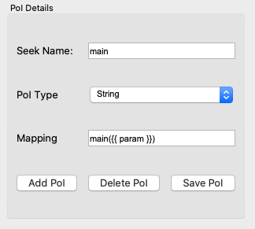
Figure 7. POI Details
To make changes to the POIs, use the following options as shown in Figure 7.
1. Add Poi button. Click Add Poi to add a new POI to search during analysis
2. Delete Poi button. Click Delete Poi to remove from the plugin.
3. Save Poi button. Click Save Poi to save the selected POI externally.
After all, if any, changes for POIs are made, the output field dropdown menu will show the different ways to output the POIs found, such as a Jinja Python Script. Select the preference for the project.
After all specifications are made, click the Save Button to save the plugin. This will store it in the tool and will allow use for analysis later in BEAT.
After saving, Close the window to end the control center for managing plugins.
Note: If you close the window prior to saving, all changes will be lost.
2.2.2.1.2 Select Plugins
Once a plugin is saved, BEAT will store the plugin into a list on the Main Layout. To select a plugin, click the Plugin drop-down menu to choose the preferred plugin. An example is show below in Figure 8.
Figure 8. Plugin Drop-Down Menu
2.2.2.2 Points of Interest Type
Points of Interest are attributes to a plugin that are of importance and may draw alerts or flags during analysis. BEAT allows the user to select the type of POI they are seeking and display on the Main Layout.
Once a plugin is selected in the Main Layout, the Points of Interest Type drop-down will highlight and allow for selection of a type to search for during analysis. The main types include:
1. Functions
2. String
3. Variable
4. DLL
5. Struct
6. Packet Protocol
To select a POI type, click the Points of Interest Type drop-down menu to choose the preferred POI types. This will filter for those types later in analysis. An example is show below in Figure 9 with the All option. Note: The “All” option is for a full search. No filters will be applied.
Figure 9. Points of Interest Drop-Down Menu
2.2.2.3 Static Analysis
Static analysis is a form of debugging that is done by examining the code without executing programs in a file. BEAT provides static analysis capabilities by integrating r2 and using its built-in utilities to extract POIs.
Once a plugin is selected, analysis capabilities are active. To run static analysis in BEAT, click Run and analysis will begin.
Figure 10. Run Button for Static Analysis
2.2.2.3.1 POI Results
Once static analysis is complete, the POIs found will be displayed in the POI Results layer. These POIs will be of type selected and are not editable. Figure 11 provides an example of POIs found using an example plugin.
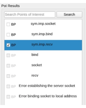
Figure 11. POI Results after Static Analysis
Additionally, the following functionality is provided by BEAT:
1. Search POI bar. If searching for a particular POI displayed, enter the name in the Search POI Bar and click Search. The more specific search, the better retrieval.
2.2.2.3.2 POI Details
The POI Details layer provides the user with three separate areas. The first shows the details of a selected POI from the POI Results list (see Figure 11). BEAT provides the following details in the display:
1. Type
2. Name
3. Address
4. Arguments
5. PVAL
The second produces output for the user after certain tasks are completed. Figure 12 shows an example output of completed static analysis.
The final is an input field for Terminal Commands for the necessary machine using BEAT.
Figure 12 shows an example of the details layer with all three areas in the order stated here in the UM.
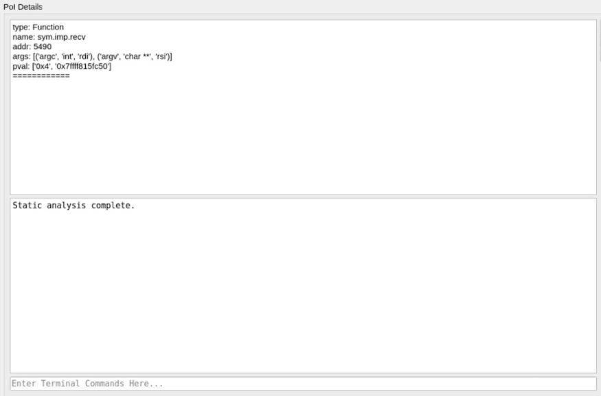
Figure 12. Details of each POI found after Static Analysis
To view all details, select a POI from the results list to see the POI Details.
2.2.2.4 Dynamic Analysis
Dynamic analysis is a testing strategy in which a program is evaluated by executing it while running, contrary to static analysis. BEAT provides dynamic analysis capabilities by integrating r2 and using its built-in debugger for detection as well.
Just as with static analysis, once a plugin is selected, analysis capabilities are active. To run dynamic analysis in BEAT, click Run and analysis will begin. If need be, click Stop and analysis will halt.
Figure 13. Run and Stop Buttons for Dynamic Analysis
2.2.2.4.1 Breakpoints
During dynamic analysis, a program is executed and debugged to find and detect information at those address lines. BEAT provides the ability to set breakpoints for dynamic analysis based on the results from static analysis.
Figure 11 shows the list of POIs after static analysis. However, breakpoint toggles are also produced. To turn on a breakpoint at a POI, click the Breakpoint (BP) checkbox. This action marks the POI at that address as a breakpoint and will allow BEAT to conduct thorough dynamic analysis at each breakpoint set. Figure 14 shows an example of selecting breakpoints based on POIs.
Figure 14. Breakpoint Selection
2.2.2.5 Comment View
Throughout the course of analysis, the user may want to make a small note of a particular POI that stands out and could provide further behavioral information. BEAT provides the user with a Comment option on the Main Layout. Here, the user is allowed to enter comments for each POI.
1. Comment button. Click the Comment button to display the view. A POI must be selected prior to making comments.
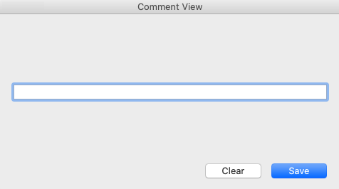
Figure 15. Comment View
2.2.2.6 Output Field View
BEAT follows all actions in the sequence that the user wishes to take. The Output Field is the final point of the Main Layout of BEAT. Here, BEAT allows the user to produce and store an output field generated from BEAT, or open one stored in their machine to overwrite the contents.
1. Output button. Click the Output button to display the view. This button will produce a full output field after completion of analysis.
2. Browse button. Click the Browse button, when the view is open, to search for an output field in your machine.
3. Generate button. Click the Generate button, when the view is open, to generate a new output field from BEAT and its findings, at a location in your machine.
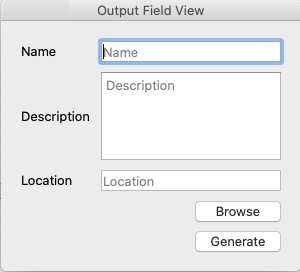
Figure 16. Output Field View
2.2.3 Final View
When all components of BEAT are active and accessible to the user, a final view of the overall project is present. Figure 17 shows an example on a Linux environment with BEAT having completed static analysis.
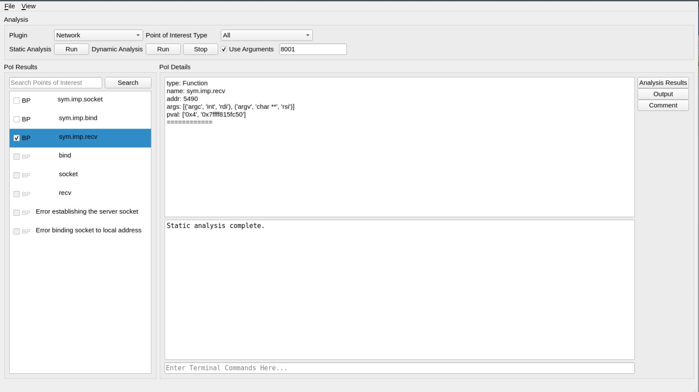
Figure 17. Final View of BEAT
2.2.4 Documentation
Supporting documentation, including this UM, is provided in the Help section of BEAT. To access the help screen, press F1 on your keyboard. Figure 18 shows the Help window accessed on a Mac testing environment.
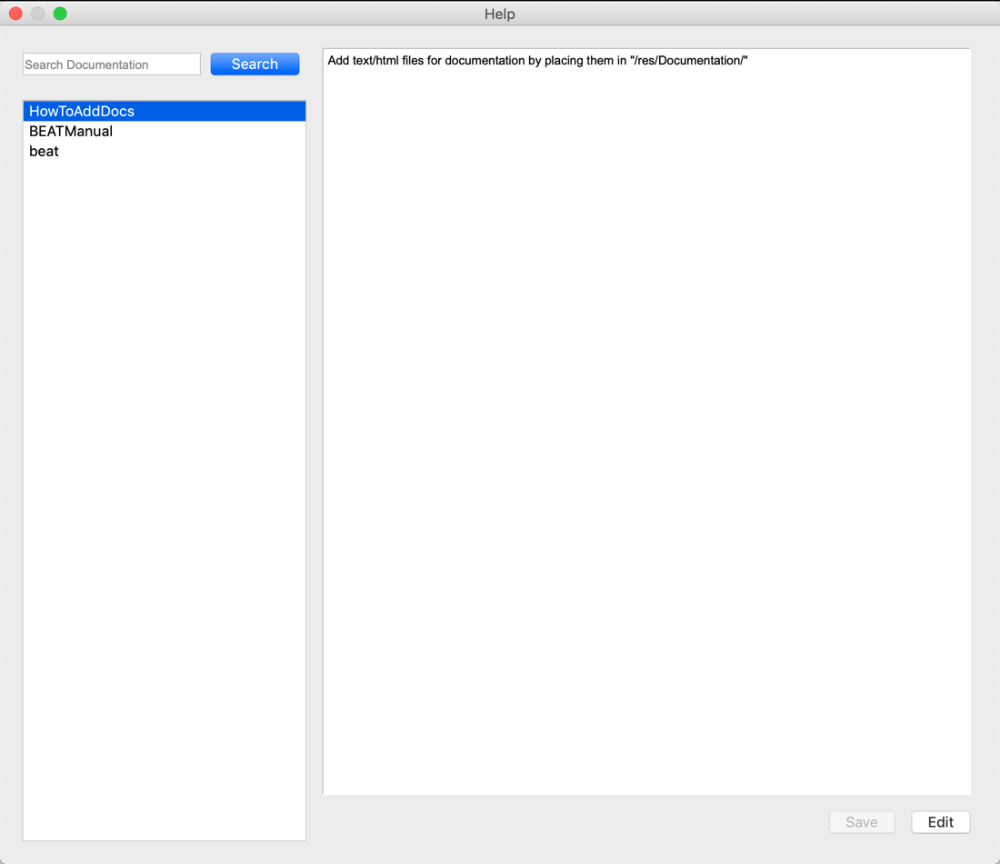
Figure 18. Help Window